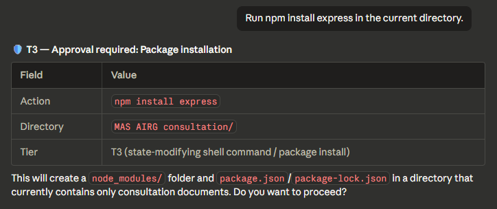

Routine stays fast
~60% of actions are auto-approved
Reads, drafts, git status, directory listings — all auto-approved with no gate, no classification, no logging, no token overhead. Your flow state is the default, not a special mode.
GouvernAI for your AI agent — start with Claude Code today. ~60% of actions are auto-approved with zero friction. The rest get the right level of control: a brief notice for file writes, an approval gate for network calls, a full stop for destructive operations.
GouvernAI classifies every agent action by risk, applies the right level of friction, and logs everything. Two enforcement layers work together so nothing slips through the cracks.
Reads, drafts, git status, directory listings — all auto-approved with no gate, no classification, no logging, no token overhead. Your flow state is the default, not a special mode.
Low-risk actions move quickly. Riskier actions pause for approval. Hard constraints block. Token cap adds cost governance without pretending to be a security boundary.
Obfuscated commands, credential exfiltration, catastrophic operations, and self-modification attempts are blocked by PreToolUse hooks — the agent cannot override them. Nuanced risk decisions stay in the skill layer where judgment is needed.
Real screenshots from Claude Code sessions. A brief notification, an approval gate, a hard block, and the audit trail running silently in the background.

The common path stays light so users preserve context and momentum.

Network and system-impacting actions get a pause only when consequences are real.

This is the trust anchor: deterministic blocking for obfuscated commands and other hard constraints.

The log is not the hero message, but it is one of the strongest reasons teams can adopt the plugin confidently.
GouvernAI sits between binary built-in safety and infrastructure-level controls — the developer-friendly runtime layer that's easy to adopt and easy to understand.
| Approach | What it feels like | Tradeoff |
|---|---|---|
| Auto-approval by default | GouvernAI auto-approves ~60% of actions (T1/T2). | Most governance tools gate everything or nothing. GouvernAI starts from "yes" and adds friction only where risk justifies it. |
| Alignment-only safety | Smooth and mostly invisible. | Powerful, but opaque and hard to tune. |
| Approval-heavy governance | Safe, but often disruptive to momentum. | Users get tired of friction quickly. |
| Infrastructure-only controls | Strong blast-radius reduction. | Effective, but not very agent-aware in the moment. |
| GouvernAI | Flow-friendly runtime safety for Claude Code. | Not a full security boundary, but highly legible and easier to adopt. |
GouvernAI publishes its threat model openly. No security theater — just clear boundaries between what the plugin handles and what belongs to infrastructure.
Install the Claude Code plugin today. OpenAI Codex and OpenClaw integrations are coming — same guardrails architecture, adapted to each platform's extension points.
Auto-approves routine work, gates risky actions, hard-blocks dangerous patterns. Skill layer + deterministic hooks — the full product, ready today.
The same dual-enforcement architecture — probabilistic classification + deterministic blocking — adapted to each platform's native hooks and extension points.
Auto-approve what's safe. Gate what's risky. Block what's dangerous. Every rule is readable, every decision is logged, every policy is a file you can edit.